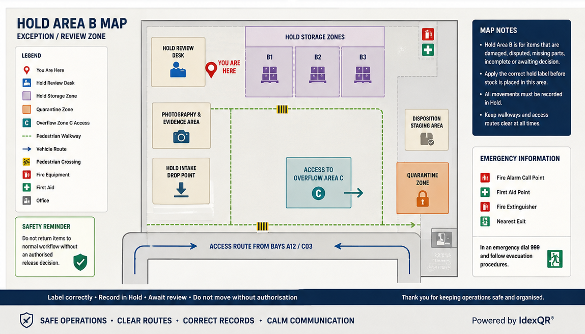

Hold Area B Map
Controlled hold stock routing, quarantine positioning and operational movement guidance for Hold Area B.
Controlled stock routing
Hold Area B

Controlled hold stock routing, quarantine positioning and operational movement guidance for Hold Area B.
Controlled stock routing
